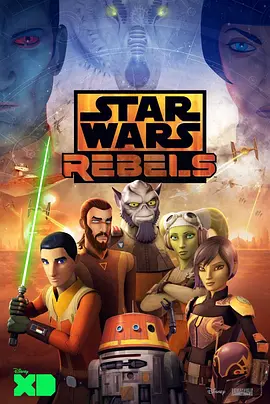

8.6
星球大战：义军崛起 第四季
Star Wars Rebels Season 4
2017
美国
评分 8.6
导演:
戴夫·菲洛尼 / Justin Ridge
演员:
泰勒·格雷 / 瓦内萨·马歇尔 / 小弗雷迪·普林兹 / 蒂娅·希尔卡 / 史蒂夫·布卢姆
类型:
冒险,动作,科幻
剧情简介
第四季把故事推向更为紧迫的战线上。帝国对洛萨尔的掌控愈发严密，而“幽灵号”上的队员已无退路，只能迎着风暴前行。萨宾带领队伍与曼达洛家族 Clan Wren 再度联手，为营救她的父亲展开行动。曼达洛装甲在阳光下反射的金属光泽、爆能枪的震动声，以及地面部队强势推进的脚步，共同构成了一场紧绷而鲜明的战斗场景。卡南与赫拉肩负起更沉重的责任，他们在秘密基地间穿梭，试图为日渐壮大的反抗力量寻找一条能够扭转局势的道路。埃兹拉在这一季面临前所未有的考验。他不再只是一个天赋异禀的少年，而是必须直面洛萨尔的命运，以原力感知城市中的恐惧、压迫与微弱的希望。他在危机中逐步成熟，步伐坚定，表情中夹杂着觉悟与承担。随着帝国武力不断升级，战斗的规模也被推到新的高度。无论是穿梭于太空战舰之间的高速追逐，还是潜入行动中压低呼吸的紧张时刻，团队都在生死一线间做出艰难判断。与此同时，反抗军之间的牵绊愈加深厚，幽灵号的成员在一次次冲突中更加明确彼此的重要性，也更加清楚未来的道路将面对怎样的代价。这一季不仅是故事的收束，更像是角色们最后的信念考验。在日益逼迫的黑暗中，他们试图点燃属于洛萨尔的光，哪怕微弱，也要让银河看到反抗仍未熄灭的火焰。